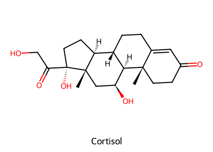
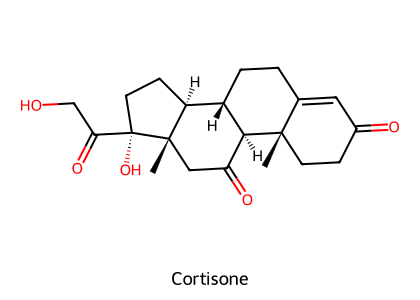
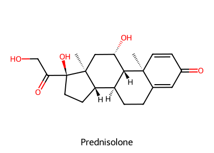
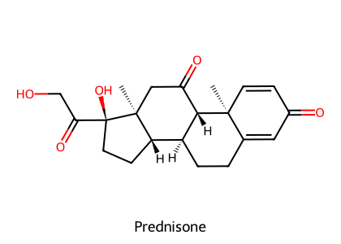
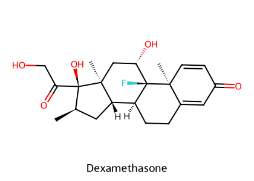
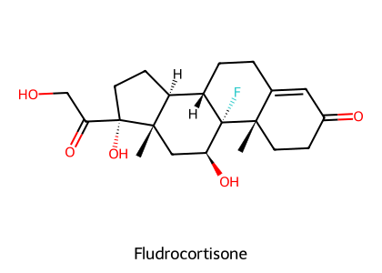

重點摘要
腎上腺皮質分泌兩大類類固醇：糖皮質素（cortisol）管代謝與發炎、礦物皮質素（aldosterone）管鈉水與鉀。它們都是脂溶性分子，穿過細胞膜後結合細胞質內的受體，進入細胞核調控基因表現——所以藥效慢、持久，而且幾乎每個器官都受影響。臨床上最常用的是合成糖皮質素：改一改結構（加雙鍵、加 F、加甲基），就能讓抗發炎效價上升、保鈉作用下降、作用時間拉長。這同時也是它的問題：劑量一高、時間一久，所有「生理作用」都變成副作用，並且壓抑自身的 HPA 軸。本章後半段講的是反方向的藥：當腎上腺分泌太多（Cushing's）時怎麼抑制，分泌太少（Addison's）時怎麼補。
- GR 位於細胞質，不在細胞膜（2025 期末考題）：結合後進入細胞核，促進某些基因表現（transactivation，如 lipocortin、β 受體），抑制某些基因表現（transrepression，如細胞激素、COX-2、PLA2）。
- 抗發炎的核心是抑制 PLA2 活化與 COX-2 表現：一次把 PG、LT 的上游關掉，所以比 NSAID 更廣效。
- Prednisone、Cortisone 是前驅藥，要靠肝臟 11β-HSD 轉成 prednisolone、cortisol；貓與馬轉換能力差，應避免使用，改給 prednisolone。
- 作用時間三分法：短效（<12 h）hydrocortisone、cortisone、fludrocortisone；中效（12–36 h）prednis(ol)one、methylprednisolone、triamcinolone；長效（36–72 h）dexamethasone、betamethasone、flumethasone。隔日療法只能用中效藥。
- Fludrocortisone 保鈉效價 125，是 Addison's 的口服首選；DOCP 是長效 IM 注射，約每 25 天一次。
- 禁忌：消化性潰瘍、心臟病／高血壓合併 CHF、糖尿病、骨質疏鬆、青光眼、角膜潰瘍、herpes 感染、懷孕與繁殖動物。optic neuritis 反而是適應症（2025 期末考題）。
- 腎上腺抑制藥各有標的：Metyrapone（11β-hydroxylase，用於診斷腎上腺功能不全）、Trilostane（3β-HSD，可逆）、Mitotane（破壞束狀帶與網狀帶，不影響球狀帶）、Ketoconazole（P450，非選擇性）、Selegiline（MAO-B，增加 dopamine 抑制 ACTH）。
本頁藥物總覽
依講義出現順序整理；給藥途徑與劑量取自 HBK Ch.12 與 VPT10 Ch.29，未寫劑量者代表講義與教科書未提供明確數字。
| 藥物 | 類別／機轉 | 途徑與參考劑量 | 重點 |
|---|---|---|---|
| Hydrocortisone（Cortisol） | 天然糖皮質素（GC 1、MC 1） | IV（水溶性 succinate／phosphate）；壓力補充 2–5 mg/kg（VPT10） | 天然型口服首渡效應大，講義列為口服無效 |
| Prednisolone | 中效 GC（GC 5、MC 0.8） | PO：抗發炎誘導 0.55 mg/kg q12h，維持 0.55–2.2 mg/kg q48h（VPT10）；壓力補充 0.4–1.0 mg/kg | 貓、馬首選的口服型態 |
| Prednisone | 前驅藥 → prednisolone | PO | 貓、馬避免使用 |
| Methylprednisolone | 中效 GC（GC 5、MC 0.5） | PO；acetate 懸浮液 SC／IM 1.1 mg/kg q1–3 週（VPT10） | 長效懸浮液一打就停不下來 |
| Triamcinolone | 中效 GC（GC 5、MC ~0） | PO、局部、鼻噴劑 | 幾乎沒有保鈉作用 |
| Dexamethasone | 長效 GC（講義 30；HBK 25；MC ~0） | PO／IV（phosphate）／IM／SC | 休克、急性過敏；高劑量可使犬流產；不可用於隔日療法 |
| Betamethasone、Flumethasone、Paramethasone | 長效 GC | 依劑型 | — |
| Fludrocortisone | 礦物皮質素（MC 125、GC 10） | PO 0.01 mg/kg q12–24h 起始，再依需求調整（HBK） | Addison's 首選 |
| DOCP（Desoxycorticosterone pivalate） | 長效礦物皮質素酯（MC 20、GC ~0） | IM 2.2 mg/kg 約每 25 天一次（HBK） | 只有 MC 作用 → 需另補 GC |
| Metyrapone | 11β-hydroxylase 抑制 | — | 診斷腎上腺功能不全；偶爾治療 Cushing's |
| Mifepristone（RU-486） | GR 與 PR 拮抗 | — | 犬有效的墮胎藥；Cushing's 實驗性治療 |
| Mitotane（o,p'-DDD） | 破壞束狀帶、網狀帶（adrenolytic） | PO 25 mg/kg q12h 10–14 天，之後 25–50 mg/kg 每週一次（HBK）；隨高脂食物給予 | 約 5% 犬出現腎上腺功能低下 |
| Trilostane（Vetoryl®） | 3β-HSD 可逆競爭性抑制 | PO 2–10 mg/kg q24h 起始（HBK），隨餐 | 犬 Cushing's 核准用藥；懷孕禁用 |
| Ketoconazole | P450 抑制（非選擇性） | PO 15 mg/kg q12h（HBK），隨餐 | 勿與 Mitotane 併用；貓避免 |
| Selegiline（L-Deprenyl） | MAO-B 不可逆抑制 | PO 1–2 mg/kg/day（HBK） | PDH（療效有爭議）、犬認知功能障礙 |
| Cyclosporine A（Atopica®） | 結合 cyclophilin → 抑制 calcineurin | PO 5 mg/kg/day 30 天，之後隔日或每週兩次（講義）；眼用 0.2% 軟膏 | 乾眼症（KCS）、異位性皮膚炎 |
| Tacrolimus（FK506）、Pimecrolimus | 結合 FKBP → 抑制 calcineurin | 局部（軟膏、乳膏） | — |
| Lokivetmab（Cytopoint®） | 犬化 anti-IL-31 單株抗體 | SC 2 mg/kg 每 4–8 週（講義） | 只用於犬異位性皮膚炎 |
※ 講義開頭另有 statins（HMG-CoA reductase 抑制劑）與犬抗肥胖藥（Dirlotapide、Lomitapide，MTP 抑制）兩張補充投影片；Dirlotapide 已整理在 腸胃道用藥。
腎上腺皮質激素與分泌調控
| 類別 | 代表激素 | 主要作用 | 分泌調控 |
|---|---|---|---|
| 糖皮質素 Glucocorticoids | Cortisol | 影響中間代謝（醣、蛋白質、脂肪）；抗發炎、免疫抑制 | 腦下垂體 ACTH（有晝夜節律與脈衝式分泌） |
| 礦物皮質素 Mineralocorticoids | Aldosterone | 調節鹽（與水）的滯留 | Angiotensin II |
| 腎上腺雄性素 | 少量 testosterone、androstenedione | 可在非內分泌組織轉成 estrone | — |
講義列出腎上腺皮質激素的三個臨床用途：① 診斷腎上腺功能、② 治療腎上腺功能異常、③ 高劑量治療發炎與免疫疾病。第 ③ 項是用量最大、也最常被誤用的一類。
※ 合成路徑中各酵素正好是後面腎上腺抑制藥的作用點：Trilostane 抑制 3β-HSD，Metyrapone 抑制 11β-hydroxylase，Ketoconazole 非選擇性抑制多個 P450 步驟。
作用機轉：核受體超家族重要
腎上腺素受體（α、β）、分解 bradykinin 的酵素（ACE、neutral endopeptidase）、糖質新生酵素、lipocortin-1。
細胞激素與其受體、PLA2、COX-2、NOS、endothelin-1。
講義把它歸為訊息傳遞的 Type 4：細胞內受體（核受體超家族）。2025 期末考第 38 題的錯誤選項就是「活化位於細胞膜的 GR 受體」。因為需要經過基因轉錄與蛋白質合成，起效需要數小時，但藥效時間比血漿半衰期長，所以教科書用「生物半衰期（biological half-life）」而不是血漿半衰期來分類作用時間。
HBK Ch.12 Figure 12-3 的描述與講義一致，另外列出被上調的基因（腎上腺素受體、ACE、neutral endopeptidase、lipocortin-1）與被下調的基因（細胞激素、PLA2、COX-2、NOS、ET-1）。Aldosterone 同樣經由核受體作用，增加遠端腎小管 Na⁺ 通道、K⁺ 通道、Na⁺/K⁺-ATPase 的 mRNA 合成。
生理與藥理效應
每一項效應都同時是「治療作用」與「長期副作用」的來源。讀的時候對照第 10 節的毒性表會更好記。
| 系統 | 效應（講義） | 臨床對應 |
|---|---|---|
| 允許作用 permissive | 維持兒茶酚胺對血管、支氣管平滑肌的反應，以及兒茶酚胺誘發的脂肪分解；缺乏 cortisol 時反應減弱，補充生理量即恢復 | Addison's 動物對升壓藥反應差 |
| 醣代謝 | 促進糖質新生（增加肝腎胺基酸攝取、增加糖質新生酵素活性）；刺激肝醣合成酶；空腹時促進肌肉釋出胺基酸、抑制周邊葡萄糖攝取、促進脂肪分解 | 高血糖、類固醇性糖尿病；牛酮症治療 |
| 異化作用（長期大劑量） | 淋巴組織、結締組織、肌肉、脂肪、皮膚分解；肌肉量下降、無力；生長遲緩（生長激素無法逆轉） | 肌肉萎縮、皮膚變薄、傷口癒合差 |
| 鈣與骨骼 | 抑制腸道吸收與腎臟再吸收 Ca²⁺ → 低血鈣 → PTH 分泌 → 骨吸收增加；促進成骨細胞凋亡 → 骨膠原與骨生成減少 | 骨質疏鬆、骨折；長期使用的主要限制 |
| 電解質與水 | 長期使用 PU/PD（降低滲透壓受器敏感度、減少 ADH 分泌）；心輸出量增加 → GFR 上升；高劑量／長期 → Na⁺ 與水滯留 | 高血鈉、低血鉀、高血壓、水腫 |
| 心血管 | 增加血管收縮反應與心肌收縮力；↑PNMT（NE → EP）；↑血管 α 受體與心肌 β 受體表現；↑angiotensinogen、ACE、AT 受體；微血管通透性下降 | 休克治療；去充血 |
| 抗發炎 | 抑制 PG、histamine、LT、bradykinin 生成；抑制 PLA2 活化；減少發炎細胞 COX-2 表現；減少嗜鹼性球釋放 histamine | 各種發炎性疾病 |
| 免疫抑制（高劑量） | 抑制細胞黏附分子 → 白血球浸潤減少；抑制巨噬細胞（IFN-γ、IL-1、TNF）與淋巴球（IL-2、IFN-γ）；細胞免疫受影響比體液免疫大 | 免疫媒介性疾病、器官移植；感染風險上升 |
| 呼吸道 | 增加 β 受體數量與親和力 → 防止下調（耐受性）、增強 β2 促效劑作用；增加 α 受體表現 → 呼吸道去充血 | 氣喘：與 β2 促效劑併用（如 fluticasone＋salmeterol 用於貓氣喘） |
血球變化（HBK Ch.12）：糖皮質素增加循環中的紅血球、嗜中性球、單核球與血小板，減少淋巴球、嗜酸性球與嗜鹼性球——也就是臨床常說的「stress leukogram」。嗜中性球增多是因為從骨髓釋出增加、離開血管減少，但其功能反而被抑制。血小板增加也是 HBK 列出血栓風險的原因。
構效關係與結構式
所有皮質類固醇都是同一個四環骨架（A–D 環）。只要記住幾個位置，就能從結構推出一個藥是「偏糖皮質」還是「偏礦物皮質」、會不會是前驅藥。






結構式依 PubChem 資料以 RDKit 自繪。
| 位置 | 對活性的影響（講義） | 從結構看例子 |
|---|---|---|
| 3-keto、Δ4,5 雙鍵 | 糖皮質活性必要 | 所有活性藥物都有 |
| 11-OH | 糖皮質活性所需；11-keto 為前驅藥 | Cortisone、Prednisone 需經 11β-HSD 轉成 11-OH |
| 17α-OH、20-keto | 糖皮質活性 | — |
| 16-CH₃ 或 16-F | ↑糖皮質活性、↓礦物皮質活性 | Dexamethasone、Betamethasone 保鈉作用幾乎為 0 |
| 21-OH | 礦物皮質活性必要 | Aldosterone、Fludrocortisone、Desoxycorticosterone |
VPT10 Ch.29：9 位鹵化、1,2 位不飽和、2 或 16 位甲基化，會延長半衰期 50–70% 以上；11-OH 也能減少分解（11-deoxycortisol 的半衰期只有 cortisol 的一半）。這解釋了為什麼 dexamethasone（同時有 Δ1、9-F、16-CH₃）是長效藥。
作用時間與效價必考
| 作用時間（生物半衰期） | 藥物 | 抗發炎效價（講義） | 保鈉效價（講義） | HBK Table 12-1 |
|---|---|---|---|---|
| 短效 <12 h | Hydrocortisone（cortisol） | 1 | 1 | 1／1 |
| Cortisone | 前驅藥，肝臟轉換後約 0.8 倍 | 0.8／0.8 | ||
| Fludrocortisone | 10 | 125 | 10／125 | |
| 中效 12–36 h | Prednisone | 前驅藥 | 4／0.8 | |
| Prednisolone | 5 | 0.8 | 5／0.8 | |
| Methylprednisolone | 5 | 0.5 | 5／0.5 | |
| Triamcinolone | 5 | ~0 | 5／0 | |
| Fluprednisolone | 15 | ~0 | — | |
| 長效 36–72 h | Paramethasone | 10 | ~0 | 10／0 |
| Betamethasone | 30 | ~0 | 25／0 | |
| Dexamethasone | 30 | ~0 | 25／0 | |
| Flumethasone | 30 | ~0 | 30／0 | |
| 礦物皮質素 | Fludrocortisone | 10 | 125 | 10／125 |
| Desoxycorticosterone | ~0 | 20 | — | |
講義與教科書的數字不同：Dexamethasone、Betamethasone 的抗發炎效價講義寫 30，HBK 寫 25；Prednisone 講義只寫「prodrug」，HBK 給 4。考試以講義數字為準，臨床換算時知道兩種數字都有人用即可。
記憶口訣：短效 1、中效 5、長效 30；保鈉作用只有 cortisol（1）、prednisolone（0.8）、methylprednisolone（0.5）與兩個礦物皮質素比較明顯，其他幾乎為 0。需要抗發炎但怕水鈉滯留（心臟病、高血壓）時，偏好保鈉作用低的藥物。
藥動學、劑型與給藥途徑
- 來源：由牛的 cholic acid 或植物的 steroid sapogenins（diosgenin，山藥、薯蕷）合成。
- 血漿蛋白結合：約 75% cortisol 與 CBG（corticosteroid-binding globulin，α2 globulin）及白蛋白結合。
- 口服：合成藥物口服吸收良好、完全；天然 cortisol 與 desoxycorticosterone 因肝臟首渡效應，口服無效。
- 代謝：C3-keto 還原為 -OH 後結合代謝；cortisol 可轉成 cortisone；前驅藥經 11β-HSD 活化。
- 晝夜節律：cortisol 分泌跟著 ACTH 脈衝，有晝夜節律——VPT10 建議若隔日療法無效，改成每天早上一次，以模擬生理的晝夜變化（犬）。
貓與馬避免使用 Prednisone 與 Cortisone：這兩種動物把前驅藥轉成活性形的能力差，馬的口服吸收也差（講義）。VPT10 Ch.29 同樣指出，prednisone 在馬「不被吸收或吸收後無法轉成 prednisolone」，因此口服首選 prednisolone 錠劑。
劑型與途徑
| 劑型 | 途徑 | 重點 |
|---|---|---|
| 水溶性注射（phosphate、succinate 酯、PEG 溶液） | IV／IM／SC | 休克、急性需求 |
| 非水溶性懸浮液（acetate、pivalate、acetonide） | IM／SC，不可 IV（避免栓塞） | 作用可達 3 週（HBK），如 methylprednisolone acetate、DOCP |
| 口服 | PO | 所有合成藥都可口服 |
| 眼藥水、眼藥膏 | 局部 | 眼疾；角膜潰瘍禁用 |
| 耳滴劑 | 局部 | — |
| 關節內注射 | IA | 有爭議（見第 9 節） |
| Hydrocortisone 灌腸劑 | 直腸 | 潰瘍性結腸炎 |
| 氣霧劑（beclomethasone、fluticasone） | 吸入 | 氣喘；減少全身副作用 |
| 鼻噴劑（beclomethasone、triamcinolone） | 鼻內 | 過敏性鼻炎 |
| 軟膏、乳膏 | 皮膚 | 皮膚病；可經皮吸收抑制 HPA 軸 |
臨床用途與用法分類
六種用法（講義）
| 用法 | 說明 | 教科書補充 |
|---|---|---|
| 生理替代 | 腎上腺切除動物；低劑量 | — |
| 短期密集與休克 | 出血性、敗血性休克；可提高存活率 | HBK：長效藥用於休克與急性過敏 |
| 抗發炎、抗過敏 | 最常見的用途，也是最常被誤用的用途 | VPT10：prednis(ol)one 0.55 mg/kg q12h PO 誘導，0.55–2.2 mg/kg q48h 維持；貓的需求量經驗上約為犬的 2 倍 |
| 免疫抑制 | 使用建議劑量的上限 | — |
| 慢性緩和治療 | 例如與 NSAID 併用於慢性關節炎（講義） | 見第 13 節的胃腸風險 |
| 隔日療法 | 中效藥隔日給，可減輕對 ACTH 分泌的抑制 | VPT10：隔日療法很少能當作初始治療，應先每日給藥達到效果再轉換；用長效藥做隔日療法不合理；轉換要漸進，否則出現戒斷症狀 |
適應症（講義）
自體免疫溶血性貧血、ITP、IBD、SLE；氣喘、過敏性鼻炎、蕁麻疹、藥物引起的過敏反應；器官移植排斥
關節炎、滑囊炎、腱鞘炎；異位性皮膚炎、脂漏性皮膚炎、接觸性皮膚炎；多發性肌炎；頸椎或腰椎疼痛
過敏性結膜炎、視神經炎；高劑量用於急性 CNS 外傷
G(−) 敗血症、休克；多發性骨髓瘤、白血病；吸入性肺炎；牛酮症（↑血糖）
特殊用法的注意事項
關節內注射有爭議且可能危險：雖能減輕疼痛發炎，但動物因不痛而繼續使用受損關節、軟骨細胞膠原與關節液生成下降 → 關節與骨骼崩解萎縮、肌腱斷裂、加速骨關節炎惡化，也會全身吸收。局部與病灶內使用同樣可能經全身吸收而抑制 HPA 軸。
眼科使用：可減少發炎、正確使用能保住視力；但青光眼、角膜潰瘍、herpes simplex 角膜炎禁用——類固醇會誘發青光眼（小樑網細胞有 GR，類固醇使細胞數減少、細胞外基質沉積）、延緩角膜癒合、促進感染擴散，並增強細菌或白血球產生的 collagenase 活性（角膜融解）。
毒性、禁忌與停藥重要
| 類別 | 毒性（講義） | 教科書補充（HBK Ch.12） |
|---|---|---|
| 代謝 | 滿月臉、脂肪重新分布（軀幹肥胖）、痤瘡、皮膚變薄與瘀青、高血糖（糖尿病）、骨質疏鬆、肌肉萎縮 | 肌病變；已有輕度糖尿病的動物長期使用易發展成糖尿病 |
| 皮膚 | 膠原合成減少 → 皮膚薄、掉毛、傷口癒合慢、易瘀青；Cushingoid 外觀；兩側對稱性脫毛；犬遠比貓明顯 | — |
| 眼 | 眼壓上升／青光眼；白內障 | — |
| 消化道 | 消化性潰瘍；噁心、體重下降 | GI 潰瘍；犬肝毒性（微結節性肝硬化、肝腫大） |
| 電解質與心血管 | 鈉水滯留、低血鉀、高血壓 | 水腫；貓的鬱血性心衰竭；血小板增加 → 血栓 |
| 免疫 | 病毒、細菌、黴菌感染易感性上升 | 傷口癒合延遲；易感染 |
| 生殖 | 反芻獸、馬懷孕後期高劑量 → 刺激子宮內膜 PGF2α → 誘發分娩；高劑量 dexamethasone 可使犬流產；懷孕早期有致畸胎性；繁殖動物避免使用 | 懷孕後期流產 |
| 其他 | — | 馬的蹄葉炎（小靜脈收縮） |
| HPA 軸抑制 | 長期治療明顯抑制腎上腺 | 長期高劑量停藥 → 醫源性腎上腺功能低下 |
高血糖、水腫、高血壓、低血鉀、消化性潰瘍、骨質疏鬆、隱藏的感染
消化性潰瘍、心臟病／高血壓合併 CHF、糖尿病、骨質疏鬆、青光眼、herpes simplex 感染。HBK 另列：未控制的感染、角膜潰瘍、燒傷、懷孕
停藥與 HPA 軸恢復
講義列出停藥的急性症狀：發燒、肌肉痛、關節痛、全身不適。VPT10 Ch.29 補充動物的戒斷表現：沉鬱、運動耐受度下降、協調不良、體重下降、軟便、行為改變。
- 犬每天給藥 2 週內就會明顯抑制腎上腺；prednisolone >0.5 mg/kg/day 超過 2 週應視為慢性治療。
- 但犬 0.5 mg/kg q12h 給 35 天後突然停藥，HPA 軸不到 2 週就完全恢復；人類則可能需要 6–9 個月。
- 劑量大（prednisolone >1 mg/kg/day）或療程超過 2 週 → 需要逐步減量。療程少於 2 週，犬通常可以較快減藥。
- 腎上腺功能邊緣的動物遇到壓力（手術、麻醉、疾病）需要補充：hydrocortisone／cortisone 2–5 mg/kg，或 prednisolone／prednisone 0.4–1.0 mg/kg。
腎上腺疾病治療藥重要
腎上腺被逐漸破壞，超過 90% 被破壞才出現症狀。講義列出的人類症狀頻率：疲倦與無力（99%）、厭食、噁心、嘔吐（90%）、體重下降（97%）、皮膚黏膜色素沉著、低血壓（87%）。治療：補礦物皮質素＋糖皮質素。
三種來源：腦下垂體依賴性（腺瘤、回饋失靈）、腎上腺依賴性（腺瘤、腺癌）、醫源性（糖皮質素誤用）。治療：抑制合成或破壞腎上腺皮質。
礦物皮質素替代
| 藥物 | 特性 | 途徑與劑量 | 副作用 |
|---|---|---|---|
| Aldosterone | 最重要的生理性礦物皮質素，但作用時間太短，臨床不使用 | — | — |
| Fludrocortisone | 最常用的保鹽激素；糖皮質與礦物皮質效價都高 | PO 0.01 mg/kg q12–24h 起始（HBK） | — |
| DOCP | desoxycorticosterone 的長效酯；犬核准 | IM 懸浮液，約每 25 天一次（2.2 mg/kg，HBK） | 低血鉀、高血鈉、高血壓、肌肉無力 |
Cushing's 與診斷用藥
| 藥物 | 作用點 | 用途 | 途徑與劑量 | 副作用與注意事項 |
|---|---|---|---|---|
| Metyrapone | 選擇性抑制 11β-hydroxylase | 診斷腎上腺功能不全（2025 期末考題）；偶爾治療 Cushing's | — | — |
| Mifepristone（RU-486） | GR 與 PR 拮抗 → 阻斷 HPA 回饋 → ACTH、cortisol 上升 | 終止早期妊娠（犬有效）；Cushing's 實驗性治療 | — | — |
| Mitotane（o,p'-DDD） | 結構類似 DDT；破壞束狀帶與網狀帶（機轉不明）；不影響分泌 aldosterone 的球狀帶（HBK） | PDH、腎上腺腺瘤與腺癌 | PO 25 mg/kg q12h 約 2 週（HBK：10–14 天），之後每週一次（HBK：25–50 mg/kg）；脂溶性，隨高脂食物給予可增加吸收 | 嘔吐、厭食、無力、肝毒性；約 5% 犬出現腎上腺功能低下，可能需要 fludrocortisone；壓力時需補 GC；人的半衰期 18–159 天 |
| Trilostane（Vetoryl®） | 3β-HSD 可逆性抑制；活性代謝物 ketotrilostane | 2008 年美國核准用於犬 Cushing's；也用於馬、貓 | PO 2–10 mg/kg q24h 起始（HBK）；隨餐可增加吸收 | 嘔吐、嗜睡、腹瀉、電解質異常；抑制黃體素合成 → 懷孕禁用 |
| Ketoconazole | 非選擇性抑制 P450 → 抑制腎上腺與性腺類固醇合成 | Mitotane 無效的 Cushing's | PO 15 mg/kg q12h（HBK）；隨餐給以增加吸收 | 嘔吐、厭食、肝毒性（副作用比其他抗黴菌藥多）；生殖干擾；藥物交互作用多、勿與 Mitotane 併用（HBK：抑制 mitotane 代謝）；貓避免（phase I 酵素活性低） |
| Selegiline（L-Deprenyl） | 相對選擇性、不可逆的 MAO-B 抑制；也抑制 NE、5-HT 回收（類 amphetamine） | 犬 PDH（原始核准，dopamine 不足假說）；犬認知功能障礙（補充核准）；人 Parkinson's | PO 1–2 mg/kg/day（HBK） | HBK 引用研究指出其對 PDH 無效；代謝物包括 methamphetamine、L-amphetamine |
講義與教科書不一致：講義寫 Trilostane「也抑制 estrogen 與 androgen 合成」，HBK Ch.12 則寫「Trilostane does not affect the synthesis of estrogens or androgens」。考試以講義為準，但知道教科書有不同說法。
Metyrapone 抑制 11β-hydroxylase → cortisol 下降（<220 nM 表示抑制足夠）→ 正常情況下 11-deoxycortisol 與 ACTH 都應上升。
・11-deoxycortisol 沒有上升、ACTH 上升 → 腎上腺功能不全（原發性）
・兩者都沒有上升 → 下視丘或腦下垂體層級的 HPA 軸受損
異位性皮膚炎的免疫調節藥
講義最後一段把「不是類固醇、但常用來取代類固醇」的免疫調節藥放在一起比較。2025 期末考第 40 題就是考哪一個「不是」犬異位性皮膚炎的治療藥——答案是 Fludrocortisone（礦物皮質素）。
| 藥物 | 來源 | 機轉 | 獸醫用途與途徑 |
|---|---|---|---|
| Cyclosporine A（CsA） | 真菌 Tolypocladium inflatum；MW 1202 | 結合 cyclophilin → 複合物抑制 calcineurin → NF-AT 無法活化 → T 細胞 IL-2 等轉錄下降 | 主要：乾眼症（KCS）局部治療，0.2% 軟膏（Optimmune®）；犬腎絲球腎炎；異位性皮膚炎口服液（Atopica®，犬貓）PO 5 mg/kg/day 30 天，之後隔日或每週兩次；獸醫使用劑量較低、副作用較人少 |
| Tacrolimus（FK506） | 鏈黴菌 Streptomyces tsukubaensis；MW 800 | 結合 FK binding protein → 抑制 calcineurin | 移植藥；局部使用 |
| Pimecrolimus | 由 ascomycin（FK520）衍生；MW 810 | 同 tacrolimus | 人用 1% 乳膏局部使用 |
| Lokivetmab（Cytopoint®） | 犬化單株抗體（IgG4） | 中和 IL-31（主要來自 Th2 細胞、嗜酸性球、嗜鹼性球與肥大細胞）→ 阻斷搔癢訊號 | 犬異位性皮膚炎；SC 2 mg/kg 每 4–8 週；生體可用率 30–100%，1–4 天達峰值，t½ 7–10 天，代謝方式同內生性 Ig；台灣 2020 年核准 |
| Nemolizumab（Nemluvio®，人用） | 單株抗體 | 阻斷 IL-31 受體 α 鏈（不是 IL-31 本身） | 人異位性皮膚炎、結節性癢疹（2024 FDA） |
VPT10 Ch.45（免疫抑制藥）確認 Atopica® 是 FDA 核准的犬用口服 cyclosporine，機轉為抑制 calcineurin 與 T 細胞受體活化後的訊息傳遞；tacrolimus 也抑制 calcineurin，但作用結合的受體不同。
臨床整合：共病與用藥
類固醇的副作用幾乎都是它的藥理作用本身，所以「病患已經有什麼病」直接決定能不能用、用哪一個、用多少。
| 病患狀況 | 問題 | 處理方向 | 出處 |
|---|---|---|---|
| 糖尿病或血糖控制邊緣 | 糖質新生↑、周邊葡萄糖攝取↓ → 高血糖、胰島素需求上升 | 講義列為禁忌；必須使用時密切監測血糖，選最低有效劑量與最短療程 | 講義；HBK |
| 心臟病、高血壓（尤其貓） | 鈉水滯留、血容增加；貓的 CHF 風險上升 | 避免或改用保鈉作用低的藥物；VPT10 指出氣喘貓長期使用需注意 CHF，機轉是血糖上升、血容擴張 | 講義；HBK；VPT10 Ch.48 |
| NSAID 使用中 | 兩者都是致潰瘍藥物（VPT10 Ch.46） | 講義雖列出「慢性關節炎可與 NSAID 併用」，但兩者併用時胃腸風險疊加，需要胃腸保護與監測；Misoprostol 對類固醇相關的胃腸出血沒有保護效果（VPT10） | 講義；VPT10 |
| 角膜潰瘍、青光眼 | 延緩角膜癒合、collagenase 活性↑、眼壓↑ | 眼用類固醇禁用；先確認螢光染色陰性 | 講義 |
| 未控制的感染 | 免疫抑制、隱藏感染 | 先排除感染；VPT10 提醒免疫媒介性關節炎在給免疫抑制劑前必須排除感染性原因 | HBK；VPT10 |
| 懷孕、繁殖動物 | 懷孕後期誘發分娩或流產；早期致畸胎；Trilostane 抑制黃體素 | 避免 | 講義；HBK |
| 貓、馬 | 前驅藥轉換差 | 改用 prednisolone，不用 prednisone | 講義；VPT10 |
| 長期使用中要手術或麻醉 | HPA 軸抑制，壓力下無法增加 cortisol | 壓力期間補充 GC | VPT10 |
| Cushing's 犬用 Mitotane 中 | 需要抗黴菌藥 | 避免 Ketoconazole（抑制 mitotane 代謝） | 講義；HBK |
考點整理
- 第 38 題：corticosteroid 作用機轉的敘述何者錯誤 → 「活化位於細胞膜的 GR」是錯的（GR 在細胞質）；transactivation、transrepression 名詞要會。
- 第 39 題：何者可用於診斷 adrenal insufficiency → Metyrapone。
- 第 40 題：何者不是犬異位性皮膚炎用藥 → Fludrocortisone（其他為 cyclosporine、lokivetmab、tacrolimus）。
- 第 41 題：何者不是 glucocorticoid 的禁忌症 → Optic neuritis（是適應症）。
- 內分泌考古：aldosterone 由腎上腺皮質分泌、促進鈉水滯留（不是促進鉀滯留）；鈉滯留最強 → fludrocortisone、最弱 → dexamethasone；作用時間 betamethasone ＞ triamcinolone ＞ cortisol；兼具抗黴菌與抑制類固醇合成 → ketoconazole；L-deprenyl 治 Cushing's 的原理 → 抑制腦下垂體 ACTH；mifepristone 是 progesterone 拮抗劑（RU-486）；atopic dermatitis 不是禁忌症；毛髮增生不是長期副作用（會掉毛）；prednisolone 不能「增強免疫力」。
以下是依講義與教科書重點推測的方向，並非出自歷屆國考題目：效價與作用時間分類（尤其 dexamethasone 為長效、fludrocortisone 保鈉最強）；貓與馬避免 prednisone；隔日療法只能用中效藥；各腎上腺抑制藥的作用酵素；類固醇的禁忌與長期副作用（骨質疏鬆、糖尿病、角膜潰瘍）；DOCP 與 fludrocortisone 在 Addison's 的角色。
學習重點整理
| 主題 | 一句話 |
|---|---|
| 機轉 | 細胞質 GR → 進入細胞核 → transactivation／transrepression；起效慢、作用長 |
| 抗發炎 | 抑制 PLA2、COX-2 → PG、LT 一起下降；細胞免疫比體液免疫更受影響 |
| 構效關係 | 3-keto、Δ4 必要；11-OH 為活性形；16 位取代讓保鈉作用下降；21-OH 是礦物皮質活性必要 |
| 效價 | 短效 1、中效 5、長效 30（講義）；fludrocortisone 保鈉 125 |
| 物種 | 貓、馬不用 prednisone 與 cortisone |
| 用法 | 隔日療法只用中效藥；長期高劑量要逐步減量；壓力時補充 |
| 毒性 | Cushingoid、骨質疏鬆、高血糖、潰瘍、感染、青光眼、HPA 軸抑制；犬肝毒性、貓 CHF、馬蹄葉炎 |
| Addison's | Fludrocortisone PO 或 DOCP IM 約每 25 天 |
| Cushing's | Trilostane（3β-HSD）、Mitotane（破壞束狀帶與網狀帶）、Ketoconazole（P450）、Selegiline（MAO-B）；Metyrapone（11β-hydroxylase）用於診斷 |
| 異位性皮膚炎 | CsA／Tacrolimus 抑制 calcineurin；Lokivetmab 中和 IL-31 |